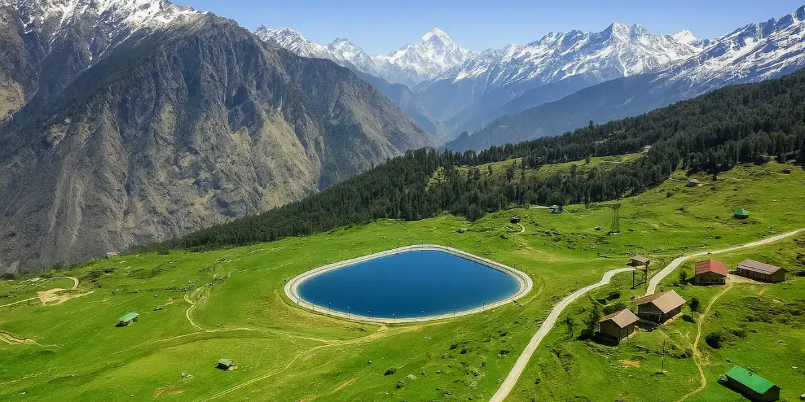
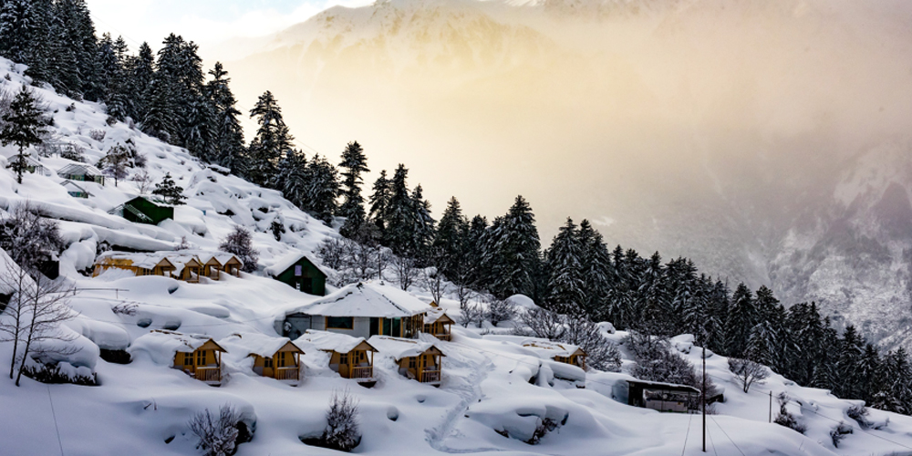
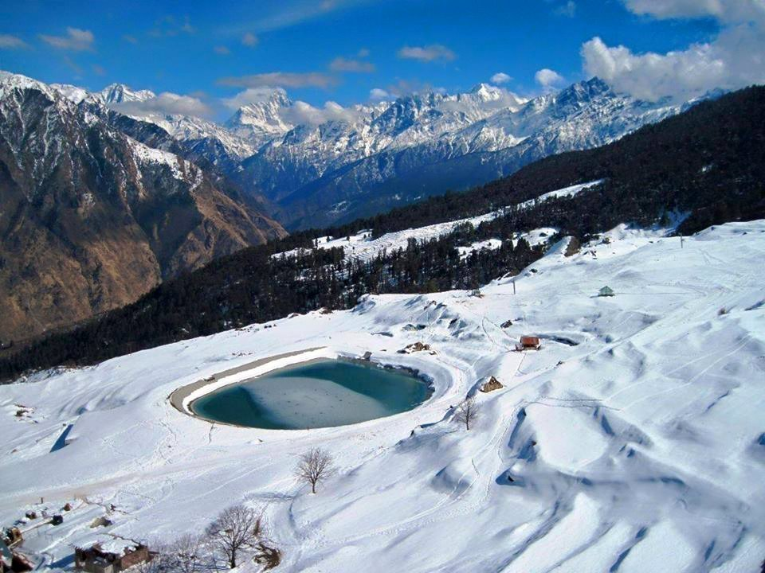
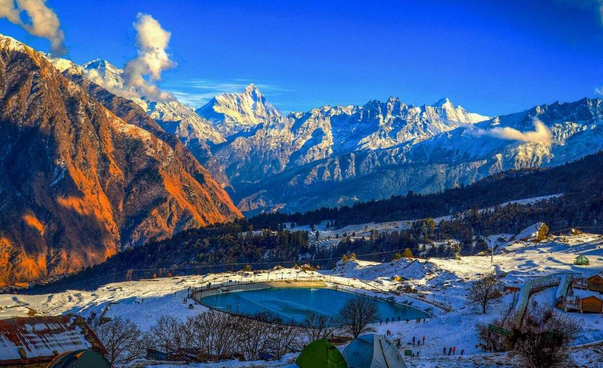
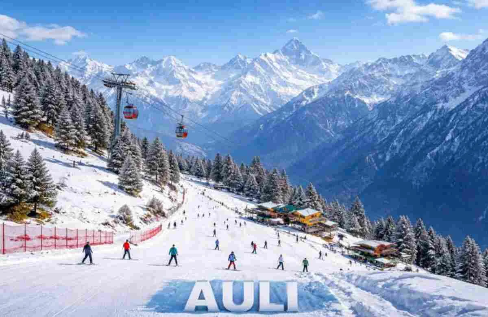

Auli (also known as Auli Bugyal, meaning "meadow" in Garhwali) is one of Uttarakhand's most enchanting hill stations and India's top skiing destination. Nestled in the Chamoli district at elevations between 2,500–3,050 meters, this pristine alpine meadow offers jaw-dropping panoramic views of snow-capped Himalayan giants like Nanda Devi, Kamet, Trishul, Dunagiri, and Neelkanth. Once a paramilitary training base, Auli has evolved into a world-class ski resort with Asia's longest cable car (4 km ropeway from Joshimath), groomed slopes, and adventure facilities run by the Garhwal Mandal Vikas Nigam (GMVN). In winter, thick powdered snow blankets the 3 km slopes, drawing skiers, snowboarders, and thrill-seekers; in summer, it transforms into lush green bugyals perfect for trekking, nature walks, and serene Himalayan escapes.
Surrounded by dense oak, rhododendron, and pine forests within the Nanda Devi Biosphere Reserve, Auli blends adrenaline-pumping adventure with profound tranquility. The iconic artificial lake (created for snow-making), Gorson Bugyal trek, and the thrilling Joshimath-Auli ropeway ride add to its magic. Whether gliding down powdery slopes at sunrise or meditating amid blooming meadows with 360° peak vistas, Auli captivates the soul — a place where the raw beauty of the Himalayas meets the joy of discovery, offering both heart-pounding excitement and deep inner peace for adventurers, families, and spiritual seekers alike.
December to March for heavy snowfall, prime skiing, and winter sports (January–February peak for consistent snow and clearest slopes); March to June for pleasant weather, green meadows, trekking, and family-friendly vibes with blooming rhododendrons. October–November offers crisp air and sharp Himalayan views with fewer crowds. Avoid July–September monsoon due to landslides, road closures, and limited visibility. Arrive early morning for ropeway rides and best peak sightings.
World-class skiing & snowboarding on 3 km slopes, Asia's longest 4 km Joshimath-Auli ropeway for stunning aerial views, Gorson Bugyal & Kwani Bugyal treks, Auli Artificial Lake for reflections, zorbing/sledding in winter, rock climbing, camping, and panoramic Himalayan vistas from the meadows — ideal for adventure sports, photography, nature immersion, and peaceful Himalayan retreats. Nearby Joshimath adds gateway access and cultural touches.
Book ropeway tickets, skiing packages, and accommodations early (especially Dec–Feb peak season), wear layered warm clothing and sturdy shoes (cold winds at altitude), hire certified instructors for skiing (beginner-friendly options available), carry essentials like water/snacks/binoculars, acclimatize gradually to high altitude, respect the fragile environment (no littering), take the ropeway for ease or drive for flexibility, and start early to catch sunrise over the peaks for unforgettable moments.
"In Auli, the Himalayas don't just stand tall — they call your name. Whether carving fresh powder under a winter sky or walking emerald meadows kissed by spring, every moment here whispers that true freedom is found where earth meets endless sky, and the heart finally breathes at home."